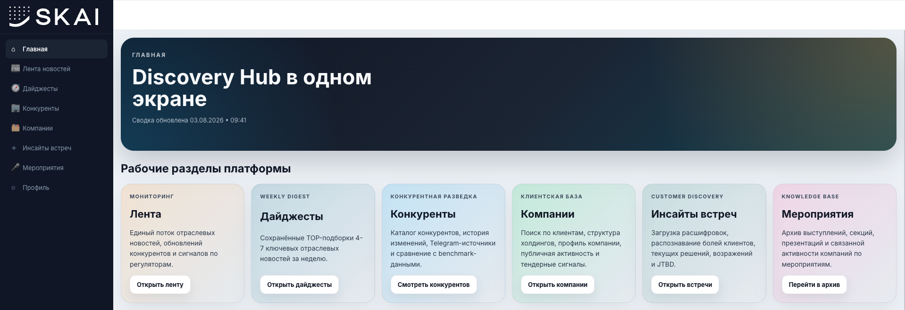

Внутренний продукт / AI-автоматизация
SKAI: Discovery Hub
Единое окно для рыночных и клиентских исследовательских сигналов
Объединил разрозненные инструменты анализа рынка, конкурентов и потенциальных клиентов в один внутренний продукт и базу знаний с актуальными данными.

Контекст
Компания SKAI разрабатывает SaaS-решения для повышения безопасности эксплуатации корпоративных автопарков. Первые сканеры рынка и конкурентов работали на личных ресурсах. Параллельно развивались отдельные инструменты анализа конкурентов и потенциальных клиентов, поэтому данные и процесс работы были разнесены.
Что сделал
Собрал Discovery Hub и единую базу знаний, добавил AI-извлечение jobs, возражений и сильных сторон из записей встреч с клиентами и лидами. Контейнеризировал продукт, перевёз его на корпоративную инфраструктуру и организовал совместную разработку в едином репозитории.
Мониторинг конкурентов и рынка: 10 ключевых -> 250+ игроков. Трудозатраты маркетолога-аналитика: -60 ч/мес.
Задачи пользователей (JTBD)
Качественные и операционные задачи, которые решает продукт для сотрудников (маркетинг, продажи, продукт, аналитика)
Отслеживание конкурентов без рутины
Получать актуальные обновления по продуктам, позиционированию и ценам конкурентов, не изучая их сайты и каналы целую неделю.
Новости отрасли в одном окне
Узнавать ключевые новости рынка и отрасли в едином интерфейсе вместо мониторинга десятков разрозненных источников.
Сравнение перед встречей с клиентом
Сравнить свою компанию с конкурентами за пару минут и получить актуальную информацию о преимуществах и недостатках перед встречей с клиентом.
Разведка по потенциальному клиенту
Изучить данные о компании потенциального клиента перед тем как совершить первый контакт.
База знаний отраслевых конференций
Находить материалы, доклады и тренды с отраслевых конференций в едином месте.
AI-извлечение инсайтов из встреч
Извлекать инсайты из транскриптов встреч с клиентами: клиентские задачи (Jobs), контекст, возражения и драйверы решений.
Эволюция продукта
Путь от самостоятельного скрипта в Colab до единого корпоративного хаба и процессов параллельной разработки
0->1 Прототип (Python + LLM)
Автоматический анализ изменений в Colab
С нуля создал скрипт на Python для Google Colab: периодически сканировал сайты конкурентов, сравнивал новые версии со старыми и с помощью LLM генерировал PDF-отчёты с анализом изменений.
Telegram Mini App & Cloud
Облачные сканеры и авто-уведомления
Создал Telegram Mini App и добавил сканер отраслевых новостей. Перевёл архитектуру на serverless-решение и облачную БД, настроив доставку результатов сканирований в ТГ.
Единое окно
Интеграция сторонних веб-модулей
Интегрировал собственные сканеры с веб-приложением другого разработчика (содержавшим статичные страницы рыночного позиционирования, сравнения фич, материалы конференций и карточки лидов).
Enterprise Hub & AI-транскрипты
Docker, корпоративная инфраструктура и AI
Упаковал всё в один продукт, настроил авторизацию по корп. почте, контейнеризировал в Docker и перенёс на инфраструктуру компании. Добавил AI-анализ встреч с клиентами (экстракция Jobs, возражений, преимуществ).
Vibe-Coding Workflow
Параллельная разработка в едином репозитории
Настроил и внедрил рабочий процесс для параллельной работы нескольких контрибьюторов (вайбкодеров) с одной кодовой базой — впервые в практике компании.
Выбранные экраны
Экранные материалы